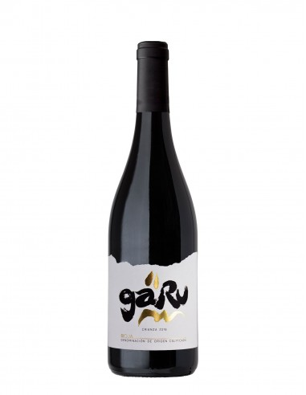
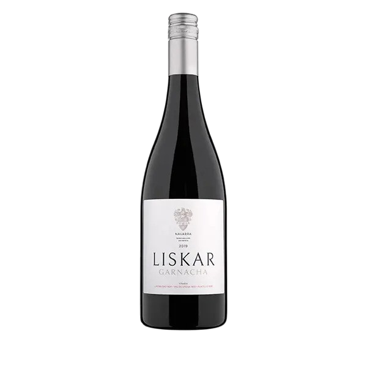
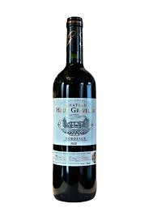
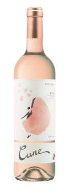

Nuestros Vinos
Faustino Rivero Blanco Semidulce

Vino blanco suave y afrutado, con notas de manzana y flor blanca. Ideal como aperitivo o con entrantes ligeros.
Garu Crianza
Tinto con cuerpo, envejecido en barrica. Vainilla, frutos rojos y un final prolongado. Perfecto para carnes.
Liskar Garnacha
Garnacha joven, vibrante y frutal. Notas de frambuesa y un toque especiado que marida bien con embutidos y pastas.
Château Haut Gravelier (Bordeaux)
Clásico blend francés de Merlot y Cabernet Sauvignon. Equilibrado, elegante y estructurado. Ideal para ocasiones especiales.
Cune Rosado
Fresco y alegre, con aroma a fresa y notas cítricas. Perfecto para días soleados y platos ligeros.